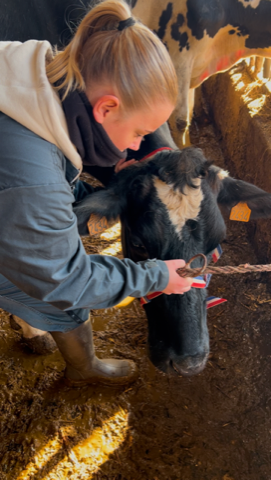

Équidés
Travail de la posture, préparation et récupération sportive, confort locomoteur du cheval/âne, suivi pour poulain et suivi gestation.
Ostéopathe animalier diplômée, j'interviens à domicile, en écurie et en élevage auprès des chevaux, bovins, chiens, chats et NAC, avec une approche adaptée au rythme de chaque animal.

Des manipulations correspondant à chaque espèce.
Chaque séance est personnalisée selon l'individu : anamnèse, observation, palpation, puis techniques manuelles choisies selon l'espèce, l'âge et l'activité de l'animal.
Travail de la posture, préparation et récupération sportive, confort locomoteur du cheval/âne, suivi pour poulain et suivi gestation.

Amélioration troubles locomoteur et accompagnement gestation et post vélage et post pathologie

Suivi des douleurs articulaires, tensions musculaires et troubles de la locomotion.
Techniques adaptées à chaque morphologie suivi post patho, troubles locomoteurs, inconfort digestif
Discussion avec le propriétaire sur l'historique, le comportement et les besoins de l'animal.

Ostéopathe animalière basée entre Bayonne, Biarritz et Anglet, j'interviens avec bienveillance chez l'animal pour soulager les tensions et rétablir l'équilibre du corps — en écurie, en élevage ou à domicile, dans le calme de son environnement habituel.
Je consulte à domicile, en écurie, en centre équestre, en pension ou en élevage, sur tout le Pays basque et le sud des Landes. Votre commune n'apparaît pas dans la liste ? Contactez-moi, je vous confirme si je peux me déplacer jusqu'à vous.
Vérifier ma disponibilité

Oui. La réglementation française impose qu'un vétérinaire ait examiné l'animal au préalable, notamment en cas de suspicion de pathologie, avant toute séance d'ostéopathie animale.
Non, les techniques utilisées sont manuelles et douces, toujours adaptées à la tolérance et au comportement de l'animal. La séance s'arrête ou se réajuste si l'animal manifeste un inconfort.
Cela dépend de l'espèce et du motif de consultation, généralement entre 30 et 60 minutes. Le tarif est communiqué avant la venue, selon la localisation et le type d'animal.
Cela varie selon l'âge, l'activité et l'état de santé de l'animal. Un suivi régulier est souvent conseillé pour les animaux sportifs ou âgés ; nous en discutons ensemble lors de la consultation.
J'interviens à domicile, en écurie, en centre équestre ou en pension, dans un rayon de 50 km autour de Bayonne, Biarritz et Anglet, afin que l'animal reste dans son environnement habituel.